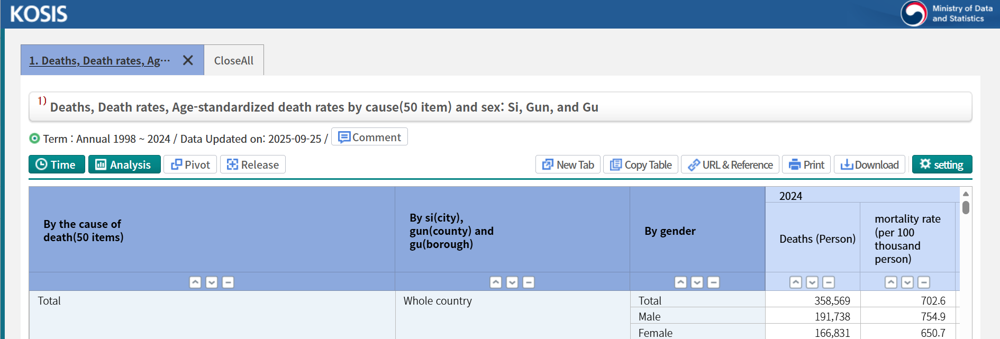
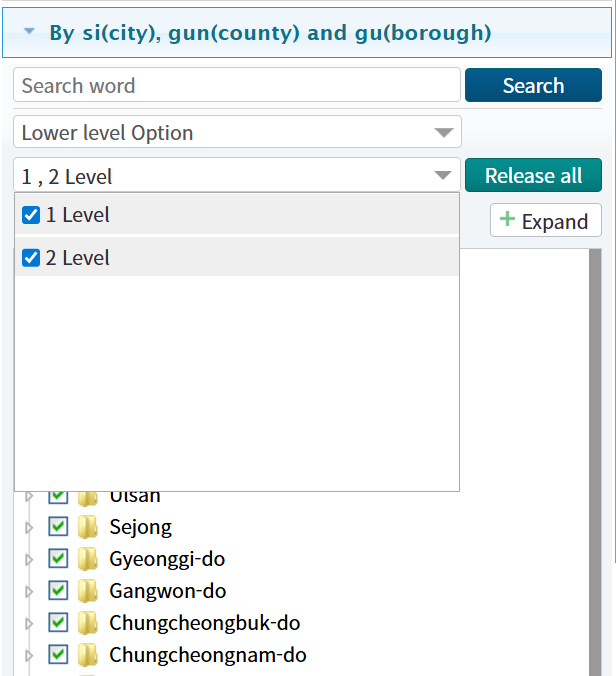
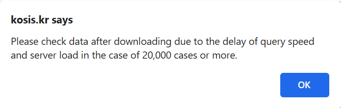
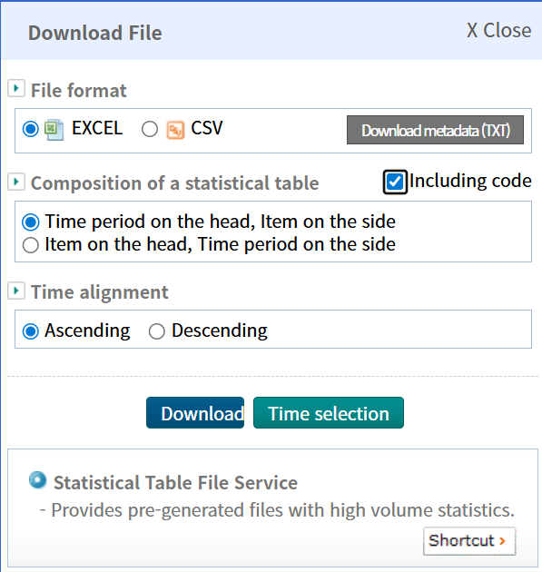
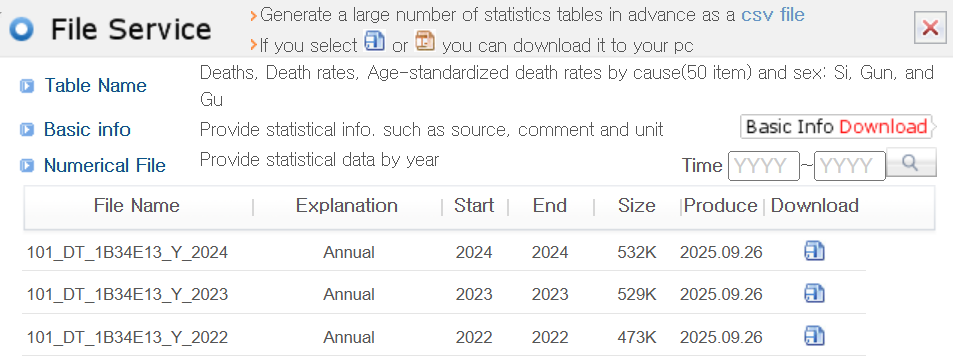

Using KOSIS Interface for Contributors
July 18, 2026
Source:vignettes/v05_contributors_guide.Rmd
v05_contributors_guide.RmdObjectives
This vignette provides a guide for contributors on how to effectively
use the KOSIS (Korean Statistical Information Service) interface for
data retrieval for addition to the package’s bundle
censuskor data.frame. In vignette 04, we
introduced how KOSIS API is used to retrieve the data of interest using
KOSIS’ OpenAPI URL. In many cases, it would be handy for users to
download data directly from KOSIS web pages. By the end of this guide,
contributors will be able to:
- Navigate the KOSIS interface to locate relevant datasets.
- Familiarize themselves with various data download options available on KOSIS platform.
- Extract and format data for inclusion in the package.
Navigating KOSIS Interface
To begin, visit the KOSIS website at KOSIS. Use the search bar or browse
through categories to find datasets relevant to your area of interest.
Since tidycensuskr offers data at Si (city),
Gun (county), and Gu (borough) levels, you could type
“Si, Gun, Gu” in the search bar to query the list of datasets available.
As of November 20, 2025, there are 11 datasets available with that
keyword. If you press one of the datasets in the list, you will be
directed to the new window with the dataset navigation tool. Below shows
the screen capture of the KOSIS interface for the dataset “Deaths, Death
rates, Age-standardized death rates by cause(50 item) and sex: Si, Gun,
and Gu”.

Setting Download Options
The default view will show a selected set of variables or Si-Gun-Gu regions. You can customize the selection by clicking on the “Setting” button on the rightmost side of the toolbar. It will prompt a sidebar where you can select the variables of interest, years, and regions. To select all Si-Gun-Gu regions, click on the “Level 2 Selection” button under the “Region” tab. It will activate all checkboxes for Si-Gun-Gu regions. Note that the “Level 1 Selection” button only selects Si (city/province) level regions, which is default for many datasets. Another to note is that some single-district cities like Sejong are sometimes not listed under “Level 2 Selection.” In this case, you need to manually check the box for such regions.

Notes on Size Restriction
Choice of an extended number of combinations results in too large queries to handle for KOSIS servers, which is prohibited by KOSIS settings. The default setting is 20,000 cells in one query instance. You might encounter an error message like the screen capture below.

To avoid this issue, try to limit the number of selected years or variables. For example, if you are interested in only the most recent year, deselect all other years except for the latest one. Similarly, if you are only interested in a subset of variables, deselect the rest. This will lead to many separate files to download, requiring further postprocessing steps to combine these files into one for cleaning.
Downloading Data
Once you have set your desired options, click the “Download” button at the top right of the sidebar. You will see a popup in the center of the screen with download format options. Most of the datasets support Excel Worksheet (.xls) and Comma-separated values (.csv) formats, for some smaller datasets, additional formats like SAS or modern Excel Worksheet (.xlsx) are also available.

It is very important to select “Including code” checkbox at the middle of the popup. This option ensures that the downloaded data includes the necessary statistical codes for regions and variables, which are essential for proper data merging and analysis. For metadata information, you can download a text metadata file by clicking “Download metadata (TXT)” button.
Oft-used datasets are pre-generated and stored on KOSIS servers for quick access. In this case, you will see an additional section in the popup named “Statistical Table File Service,” under which a “Shortcut” button is available. Another popup window will appear, providing a list of direct download links for pre-generated files. These files are typically provided by year with auxiliary variables for records.

Post-processing Downloaded Data
After downloading the data files, you may need to perform some post-processing steps to clean and format the data for inclusion in the package. This may involve:
- Reading the data into R using appropriate functions (e.g.,
read.csv()for CSV files orreadxl::read_excel()for Excel files). - Renaming columns to match the naming conventions used in the package.
Standard column names include adm1,
adm1_code, adm2, adm2_code,
year, type, class1,
class2, value, and unit.
| Column name | Description |
|---|---|
| adm1 | Si-Do (province) level administrative unit name |
| adm1_code | Si-Do (province) level administrative unit code |
| adm2 | Si-Gun-Gu (district) level administrative unit name |
| adm2_code | Si-Gun-Gu (district) level administrative unit code |
| year | Year of the dataset |
| type | Data type (e.g., population, economy) |
| class1 | First classification level |
| class2 | Second classification level |
| value | Measured value |
| unit | Unit of measurement |
- Converting data types as necessary (e.g., ensuring numeric columns
are of type
numeric). - Merging multiple files if the data was downloaded in parts due to size restrictions.
- Validating the data to ensure accuracy and completeness.
- Appending the cleaned data to
censuskorand register the dataset in the bundled dataset (i.e.,usethis::use_data(censuskor, overwrite = TRUE)).
Assigning Proper adm2_code
KOSIS cleaning requires special attention to ensure that the
adm2_code values are correctly assigned. The
adm2_code is a unique identifier for each
Si-Gun-Gu (district) level administrative unit in South Korea.
It is crucial for linking census data to spatial boundary files. We
provide a reference table for adm2_code values in the
package, namely in extdata/lookup_district_code.csv in the
package installation directory or
inst/extdata/lookup_district_code.csv if you cloned the
GitHub repository. The lookup table contains the following columns:
| Column name | Description |
|---|---|
| sido_kr | Province name in Korean |
| sigungu_kr | District name in Korean |
| sigungu_1_kr | Alternative district name in Korean |
| sigungu_2_kr | Alternative district name in Korean |
| sido_en | Province name in English |
| sigun_en | District name in English |
| sigungu_1_en | Alternative district name in English |
| sigungu_2_en | Alternative district name in English |
| sdsgg_en | Combined province and district name in English |
| base_year | Base year for the code |
| tax_exclude | Indicator for tax exclusion |
| adm2_code | Official Si-Gun-Gu (district) level administrative unit code |
| adm2_code_new | New Si-Gun-Gu (district) level administrative unit code |
| sgg_population | District code for population data |
| sgg_housing | District code for housing data |
| sgg_tax_global | District code for global tax data |
| sgg_tax_income | District code for income tax data |
| sgg_doj | District code for Ministry of Justice data (i.e., marital migrants) |
| sgg_dcee | District code for Ministry of Climate, Energy, and Environment (i.e., wastewater data) |
To note, sigungu_kr, sigungu_1_kr, and
sigungu_2_kr columns provide many versions of district
names in Korean with or without the name of basic local governments
(기초지방자치단체, upper unit of each district):
-
sigungu_kr: Standard district name with basic local governments for _non-_autonomous districts (e.g., “Ilsandong-gu, Goyang-si” (“고양시 일산동구”)) -
sigungu_1_kr: Name of basic local governments (e.g., “고양시” in all of “덕양구”, “일산동구”, and “일산서구”) filled in for _non-_autonomous districts -
sigungu_2_kr: Standard district name without basic local governments for _non-_autonomous districts (e.g., “Ilsandong-gu” (“일산동구”))
This data can be expanded upon addition of new datasets that use
different district code systems. For contributors, the target code is to
assign is usually adm2_code field values. Depending on the
retrieved data file’s layout, contributors need to match the district
names or other code systems to the adm2_code values in the
lookup table. We reflected the district changes over years by including
the base_year column in the lookup table. When joining the
lookup table to the post-processed data, use the code or name columns
and the base_year column to ensure
accurate matching.
It is extremely important to note that year matching should be done
with care. The base_year column indicates the year when the
corresponding adm2_code was valid. When joining, ensure
that the year column in your post-processed data is
less than or equal to the base_year in the
lookup table. This ensures that you are using the correct
adm2_code for the specific year of your dataset.
Please refer to the reference table below for guidance on which code or name columns to use based on the source of your data:
| type | class1 | reference_code_field | Sources | Data producer | Table name | Notes |
|---|---|---|---|---|---|---|
| economy | company | adm2_code | Economic Census | Ministry of Data and Statistics | ||
| economy | grdp | adm2_code | Regional Income | Ministry of Data and Statistics | ||
| environment | organic_matter, wastewater | NA | Korean only | |||
| housing | housing types | sgg_housing | Housing Census | Ministry of Data and Statistics | Housing Units by Type of Housing Units | |
| Transaction-based Price Indices | Korea Real Estate Board | NA | ||||
| housing | vacant housing | NA | Korean only | |||
| NA | Korean only | |||||
| NA | Korean only | |||||
| population | all households | sgg_population | Population Census | Ministry of Data and Statistics | Population, Households and Housing Units | |
| mortality | All causes | adm2_code | Vital Statistics | Ministry of Data and Statistics | Deaths and Death Rates by Sex and Age Group: Si, Gun, and Gu | |
| migration | marital | sgg_doj | Statistics of Arrivals and Departures | Ministry of Justice | Status of Marriage Migrant by Place of Stay | |
| Internal Migration Statistics | Ministry of Data and Statistics | Number of internal migrants for city, county, and district | ||||
| adm2_code | Vital Statistics | Ministry of Data and Statistics | Divorces by Month for city, county and district | |||
| adm2_code | Vital Statistics | Ministry of Data and Statistics | Marriages by Month for city, county and district | |||
| population | fertility | adm2_code | Vital Statistics | Ministry of Data and Statistics | Total Fertility Rates and Age-Specific Fertility Rates for city, county, and district | |
| medicine | doctors | adm2_code | National Health Insurance Statistical Yearbook | Health Insurance Review & Assessment Service | NA | |
| adm2_code | National Health Insurance Statistical Yearbook | Health Insurance Review & Assessment Service | NA | |||
| Community Health Survey | Korea Disease Control and Prevention Agency | Monthly Drinking | ||||
| tax | income | sgg_tax_income | National Tax Statistics | National Tax Service | Korean only | |
| general | sgg_tax_general | National Tax Statistics | National Tax Service | Korean only | ||
| National Tax Statistics | National Tax Service | NA | Korean only | |||
| National Tax Statistics | National Tax Service | NA | Korean only | |||
| National Tax Statistics | National Tax Service | NA | Korean only | |||
| Vehicle Kilometer Statistics | Korea Transportation Safety Authority | Vehicle kilometer by city/province and vehicle type | ||||
| Pension Statistics | National Pension Service | NA | ||||
| welfare | facilities | sido_en, sigungu_2_en | Welfare Statistics | Korea Social Security Information Service | Korean only | |
| welfare | registered physically mentally challenged | sido_en, sigungu_2_en | Welfare Statistics | Korea Social Security Information Service | Korean only | |
| welfare | registered physically mentally challenged severity | sido_en, sigungu_2_en | Welfare Statistics | Korea Social Security Information Service | Korean only | |
| social security | basic living security | sido_en, sigungu_2_en | Welfare Statistics | Korea Social Security Information Service | Korean only | |
| social security | basic pension | sido_en, sigungu_2_en | Welfare Statistics | Korea Social Security Information Service | Korean only |
Example Code for Post-processing
Here are example code snippets demonstrating how to read a downloaded
CSV file, clean it, and assign proper adm2_code values:
- Using Korean district name and
base_yearto join:
Assume that the post-processed data includes adm2kr
(district name in Korean) and year columns.
library(dplyr)
# fixed path to the lookup table
lookup_path <- system.file("extdata/lookup_district_code.csv", package = "tidycensuskr")
lookup_district_code <- read.csv(lookup_path)
# Read the postprocessed CSV file
pratedata <- read.csv("path/to/downloaded_file.csv")
joinby <- dplyr::join_by(
adm2kr == sigungu_2_kr,
year <= base_year
)
# join with lookup table to assign adm2_code
cleaned_data <- pratedata |>
dplyr::left_join(
lookup_district_code,
by = joinby
)- Using alternative district code (e.g.,
sgg_population) andbase_yearto join:
Let’s say the post-processed data includes sggcd
(alternative district code for Ministry of Justice data) and
year columns.
library(dplyr)
# fixed path to the lookup table
lookup_path <- system.file("extdata/lookup_district_code.csv", package = "tidycensuskr")
lookup_district_code <- read.csv(lookup_path)
# Read the postprocessed CSV file
dojdata <- read.csv("path/to/downloaded_file.csv")
joinby <- dplyr::join_by(
sggcd == sigungu_doj,
year <= base_year
)
# join with lookup table to assign adm2_code
cleaned_data <- dojdata |>
dplyr::left_join(
lookup_district_code,
by = joinby
)